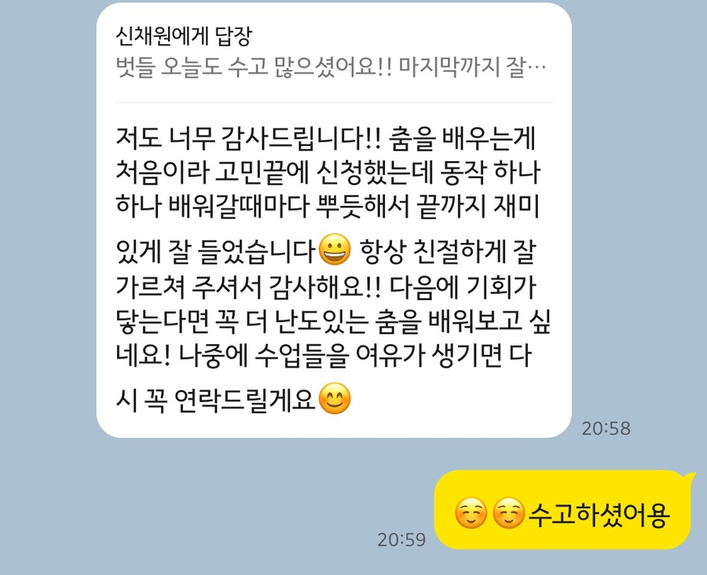
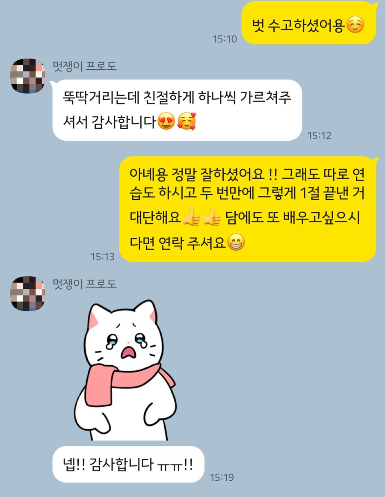

About
I’m a Korean K-pop dance instructor with over 10 years of dance experience and more than 5 years of experience as a member of a K-pop cover dance crew.
My experience spans both performance and teaching, from K-pop cover performances and video projects in South Korea to teaching K-pop dance in Warsaw. In 2026, I spent two months in Warsaw teaching K-pop classes in English and preparing students for their final performance.
Through these experiences, I have developed a strong interest in teaching K-pop to students from different backgrounds and hope to continue my work as a K-pop dance instructor in Warsaw.
Teaching in Warsaw
Program Overview
K-pop classes in Warsaw
From July to August 2026, I worked as a K-pop dance instructor at the Korean Cultural Center in Poland in Warsaw, participating in classes five days a week, Monday through Friday.
Working alongside another instructor, we taught two age groups — under 14 and ages 14+ — and alternated responsibility for each class on a weekly basis. I led 90-minute classes for my assigned group and supported the other class with individual guidance, music tempo adjustment, and photo and video documentation.
Throughout the two-month program, we covered 14 K-pop songs in total. I was responsible for teaching four full choreographies, as well as three short-form K-pop challenge choreographies through one-day classes.
TEACHING STYLE
DETAILS MAKE THE DIFFERENCE
I focus on helping students understand the choreography clearly, not simply memorize the movements. I break down each section using precise counts and timing, while paying close attention to details such as head direction, gestures, and facial expressions.
When students struggle with a particular movement, I identify what is causing the difficulty and explain the basic movement or technique step by step. As a native Korean speaker, I can also explain Korean lyrics and help students understand how the meaning of the lyrics connects to the choreography and performance.
FINAL SHOWCASE
From class to final stage
For the final showcase, I guided the under-14 group through choreography, part distribution, stage formations, and performance gestures. With the 14+ group, I also performed alongside the students as part of the same team.
For the full-group stage featuring all students and instructors, I planned and taught the overall formations, stage movements, and individual gestures, helping bring the entire performance together from preparation to the final stage.
Dance & Performance
As a member of SSU.D CREW, a K-pop cover dance crew in South Korea, I have worked on over 30 K-pop cover videos, performing choreographies across different artists, styles, and concepts. Alongside these video projects, I have also taken part in a variety of live performances, gaining experience both in front of the camera and on stage.
VIEW FULL K-POP COVER PLAYLIST ↗K-POP PERFORMANCE
OTHER DANCE STYLES
CLASSES IN KOREA
PRIVATE & SMALL-GROUP LESSONS
Before teaching in Warsaw, I taught beginner K-pop choreography through private and small-group lessons in South Korea. These smaller classes allowed me to adjust the pace of each lesson and provide more detailed, individual guidance.
- CLASS FORMAT
- 1:1 · 2:1 · 4:1
- LEVEL
- Beginner
STUDENT FEEDBACK
“It was my first time learning dance, so I was nervous about signing up, but I felt a real sense of accomplishment as I learned each movement. The lessons were always friendly and enjoyable, and I’d love to try a more challenging choreography next time.”
VIEW ORIGINAL FEEDBACK

“Thank you for patiently teaching me each movement step by step, even when I struggled with the choreography.”
VIEW ORIGINAL FEEDBACK

LET’S WORK TOGETHER
During my two months teaching in Warsaw, I was deeply moved by my students’ enthusiasm for K-pop. As a Korean dance instructor, it meant a lot to see something from my own country bring so much joy to people so far from home. I would love to return to Warsaw, feel that same passion and energy in the classroom again, and share both K-pop and the Korean culture I grew up with, while continuing to learn about the people and culture around me.
I would be happy to discuss opportunities to join your teaching team. Please feel free to reach out by email or Instagram DM—I’ll be glad to hear from you and will respond as soon as possible.